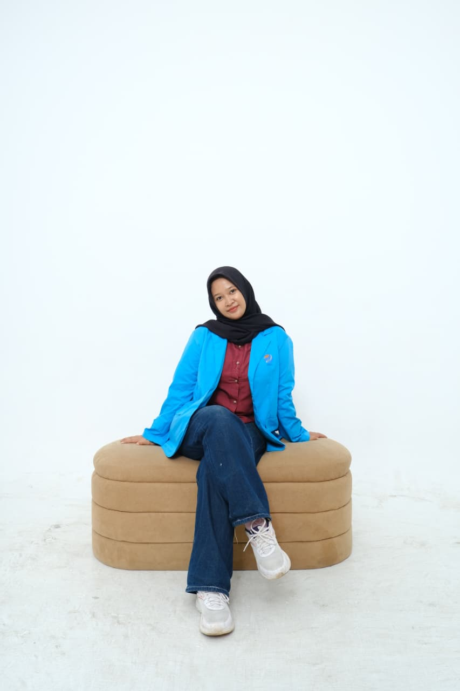
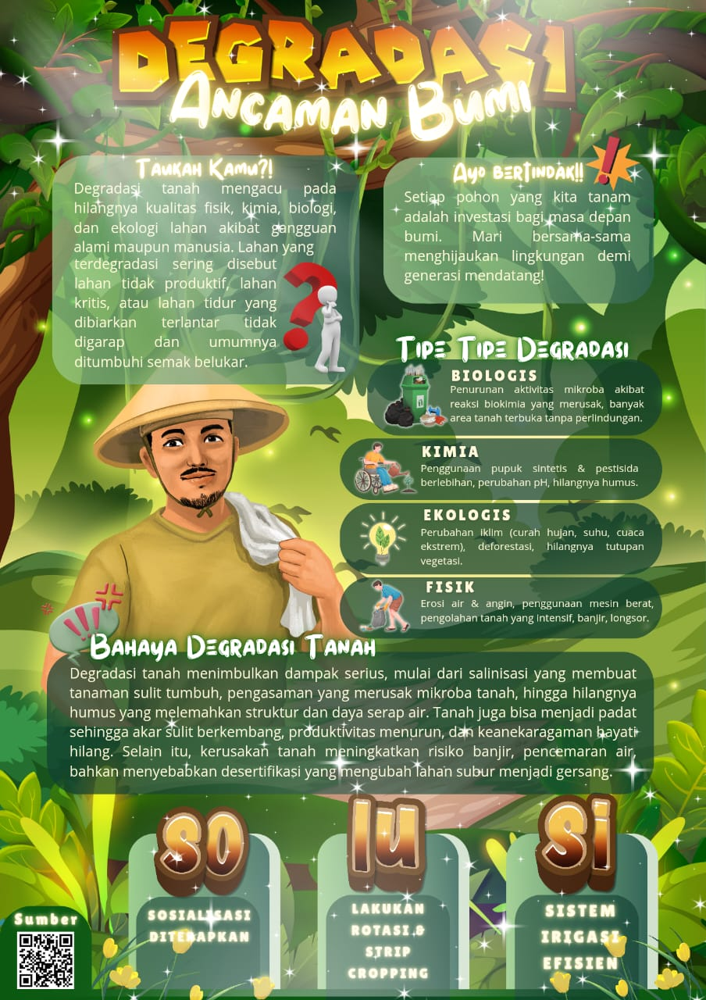
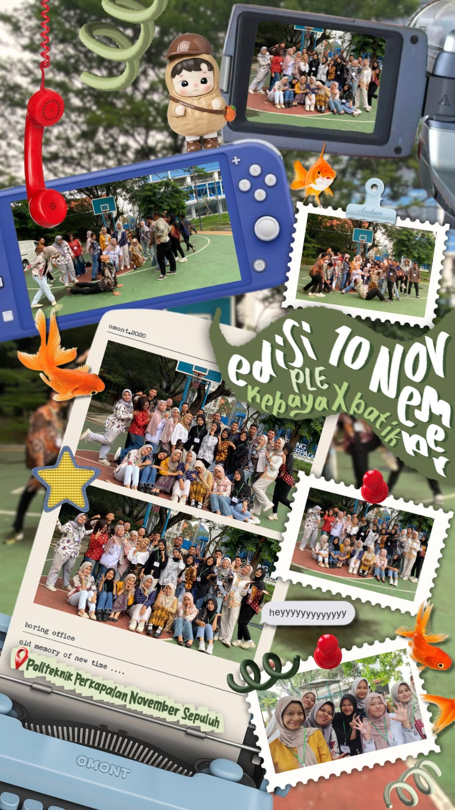
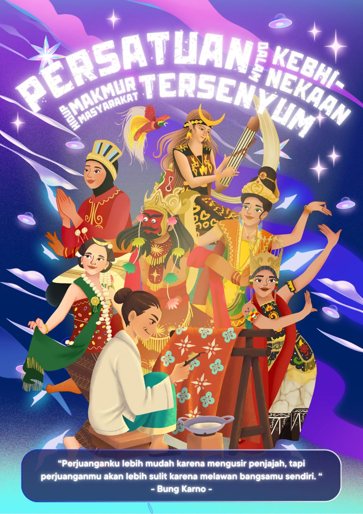
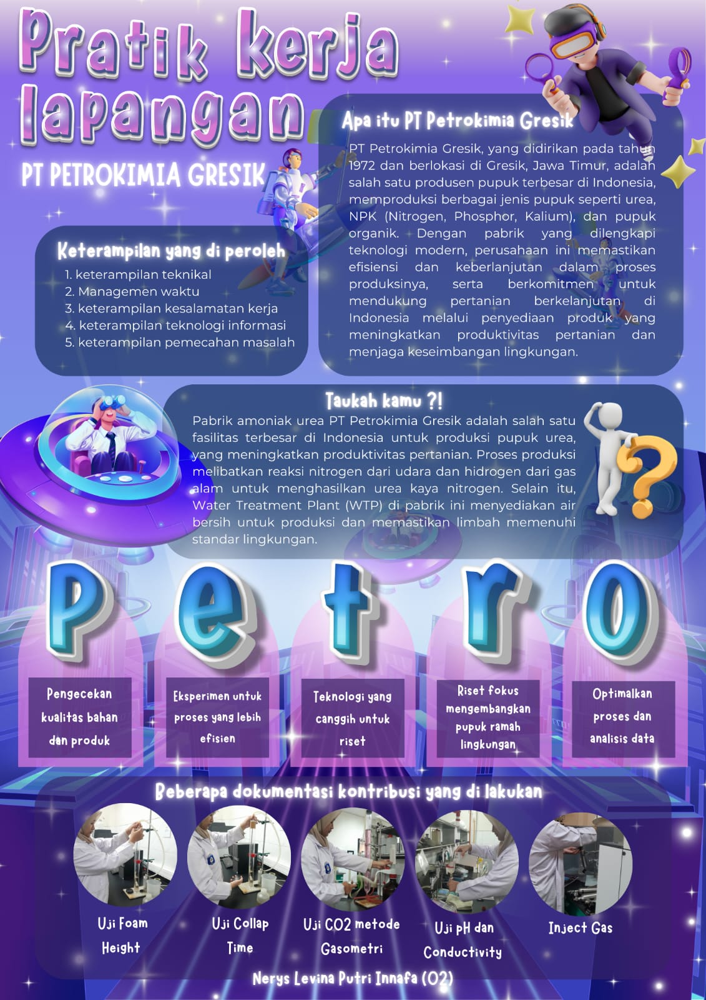
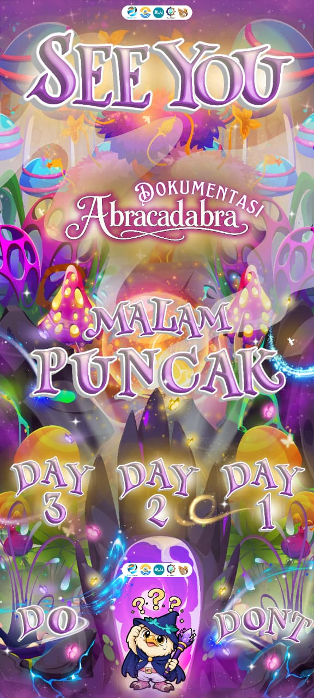

Nama Panggilan: Nerys
Tempat, Tanggal Lahir: Malang, 12 September 2006
Pendidikan: Teknik Pengolahan Limbah, Politeknik Perkapalan Negeri Surabaya (PPNS)

Teknik Pengolahan Limbah | PPNS
Nama Panggilan: Nerys
Tempat, Tanggal Lahir: Malang, 12 September 2006
Pendidikan: Teknik Pengolahan Limbah, Politeknik Perkapalan Negeri Surabaya (PPNS)
Saya memiliki hobi dalam mengedit desain grafis sebagai bentuk penyaluran kreativitas, serta tertarik dalam dunia editing secara lebih luas. Melalui desain grafis dan editing, saya dapat menggabungkan unsur seni dan teknologi menjadi karya yang tidak hanya estetis, tetapi juga memiliki makna dan tujuan yang jelas.
Berikut adalah beberapa desain yang saya miliki:

Design Grafis Degradasi Ancaman Bumi Project Gradeko Program Kerja Himatekpl

Design Grafis Kebersamaan PL25E pada 10 November

Desain Grafis Poster

Desain Grafis saat melakukan praktik kerja lapangan di PT Petrokimia Gresik

Design Grafis Feeds Malam Puncak Anniversary Teknik Pengolahan Limbah ke 12